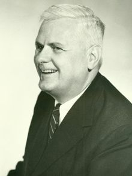
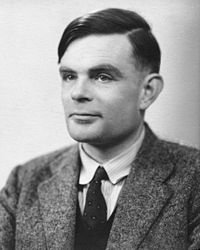

 |  | |
ä¸å¥ï¼Alonzo Churchï¼åå¾çµï¼Alan Turingï¼æ¯ä¸¤ä½å¯¹è®¡ç®æºç§å¦å ·ææ大影ååç人ç©ï¼ç¶èä»ä»¬å´å ·æé常对ç«çè§ç¹åç¸å·®å¾å¤çåæ°ãå¨æé¿è¾¾16å¹´ç计ç®æºç§å¦ç涯ä¸ï¼æ»æ¯æè§å°èªå·±çææ³ååå¤å¤çå¾å¾äºè¿ä¸¤ä¸ªâéµè¥âä¹é´ãä¸å¥ä»£è¡¨äºâé»è¾âåâè¯è¨âï¼èå¾çµä»£è¡¨çâç©çâåâæºå¨âãå¨åé¢ç8å¹´ä¸ï¼æ对ä¸å¥ä¸æ æç¥ï¼èå¨åé¢ç8å¹´ä¸ï¼æå´å¾å°åå¬å°å¾çµçååãä»ä»¬çè§ç¹è°å¯¹è°éï¼æ¯ä¸ä¸ªæ æ³åççé®é¢ãå®å ¨æé ä¸å¥ï¼æè å®å ¨æé å¾çµï¼è²ä¼¼é½æ¯é误çåæ³ãè¿æ¯ä¸ç§é常é¾è¯´æ¸ æ¥çï¼çç¾çæè§ï¼ä½æ¯ä»å¤©æè¯å¾æèªå·±çææç®è¦çä»ç»ä¸ä¸ã
æ³å¿ ä¸çä¸ææç计ç®æºå¦çé½ç¥éå¾çµç大ååäºè¿¹ï¼å 为ç¾å½è®¡ç®æºå¨å¦ä¼ï¼ACMï¼æ¯å¹´é½ä¼é¢åâå¾çµå¥âï¼å®è¢«èªä¸ºè®¡ç®æºç§å¦çæé«è£èªã大é¨åç计ç®æºå¦çé½ä¼å¨æé¨è¯¾ç¨ï¼æ¯å¦â计ç®ç论âï¼å¦ä¹ âå¾çµæºâçåçãç¶èï¼æå¤å°äººç¥éä¸å¥æ¯ä»ä¹äººï¼ä»ååºäºä»ä¹è´¡ç®ï¼ä»ä¸å¾çµæ¯ä»ä¹æ ·çå ³ç³»å¢ï¼ææ³ææä¸å°ä¸åç人å§ã
å¦æä½ æ¥ä¸ä¸æ°å¦å®¶è°±å¾ï¼å°±ä¼åç°ä¸å¥å ¶å®æ¯å¾çµçå士导å¸ãç¶èä» Andrew Hodges æèçãå¾çµä¼ ãï¼ä½ å´å¯ä»¥çå°å¾çµçå¿ç®ä¸ä»¿ä½å¹¶æ²¡æè¿ä¸ªå¯¼å¸ï¼ä»¿ä½èªå·±çâå ¨æ°åæâåºå¾çåæ°ï¼è¢«ä¸å¥æ¢èµ°äºä¸æ ·ï¼æ³¨æä½è çç¨è¯ï¼robbedï¼ãäºå®å°åºæ¯ææ ·çï¼ææè°ä¹è¯´ä¸æ¸ æ¥ãæåªè½è¯´ï¼è²ä¼¼è®¡ç®æºç§å¦ä»è¯çä¹æ¥å¼å§å°±å 满äºåç§âå®ææäºâã
è½ç¶ç°å¨å¾çµæ´å æåï¼ç¶èå¨ç°å®çç¨åºè®¾è®¡ä¸ï¼å´æ¯ä¸å¥çç论å¨èµ·çç»å¤§é¨åçä½ç¨ãæ®æçç»éªï¼ä¸å¥çç论让å¾å¤äºæ åå¾ç®åï¼èå¾çµçæºå¨å´è¿åº¦çå¤æãä¸å¥æåæç lambda calculus 以ååç»çå·¥ä½ï¼æ¯å ä¹ä¸åç¨åºè¯è¨çç论åºç¡ãèæ ¹æ®èä¸è¾ç计ç®æºå·¥ç¨å¸ä»¬çæè¿°ï¼ææ©ç计ç®æºææ¶ä¹æ²¡æåå°å¾çµçå¯åï¼é£æ¯ä¸äºçµæºå·¥ç¨å¸å®å ¨ç¬ç«çå·¥ä½ãç¶èæ趣çæ¯ï¼ç»§æ¿äºä¸å¥è¡£éµç计ç®æºç§å¦å®¶ä»¬æ¿å°çé£ä¸ªå¤§å¥ï¼ä»ç¶è¢«å«åâå¾çµå¥âãæç²ç¥çç®äºä¸ä¸ï¼å¨è¿ä»ææçå¾çµå¥ä¹ä¸ï¼ç¨åºè¯è¨çç 究è å äºè¿ä¸åä¹ä¸ã
å¾çµæºæ°¸è¿çåçå¨äºç论çé¢åï¼ç»å¤§å¤æ°è¢«ç¨å¨â计ç®ç论âï¼Theory of Computationï¼ä¸ã计ç®çè®ºå ¶å®å æ¬ä¸¤ä¸ªä¸»è¦æ¦å¿µï¼âå¯è®¡ç®æ§ç论âï¼computabilityï¼åâå¤æ度ç论â(complexityï¼ãè¿ä¸¤ä¸ªæ¦å¿µå¨é常ç计ç®ç论书ç±ï¼æ¯å¦ Sipser çç»å ¸ææï¼éï¼é½æ¯ç¨å¾çµæºæ¥åè¿°çãå¨å¦ä¹ 计ç®ç论çæ¶åï¼ç»å¤§å¤æ°ç计ç®æºå¦çææé½ä¼ä¸ºå¾çµæºå¤´ç好ä¸éµåã
ç¶èå¨åäºç 究çâ计ç®ç论â课ç¨ä¸ä¸ªå¦æç TA ä¹åæå´åç°ï¼å ¶å®å ä¹ææ计ç®ç论çåçï¼é½å¯ä»¥ç¨ lambda calculusï¼æè ç¨åºè¯è¨å解éå¨çåçæ¥æè¿°ãæè°âéç¨å¾çµæºâï¼Universal Turing Machineï¼ï¼å ¶å®å°±æ¯ä¸ä¸ªå¯ä»¥è§£éèªå·±ç解éå¨ï¼å«åâå 解éå¨âï¼meta-circular interpreterï¼ãå¨ Dan Friedman ç B621 ç¨åºè¯è¨ç论课ç¨ä¸ï¼ææåç项ç®å°±æ¯ä¸ä¸ª meta-circular interpreterãè¿ä¸ªè§£éå¨è½å¤å®å ¨ç解éå®èªå·±ï¼èä¸å¯ä»¥ä»»æçåµå¥ï¼ä¹å°±æ¯è¯´ç¨å®èªå·±æ¥è§£éå®èªå·±ï¼åæ¥è§£éå®èªå·±â¦â¦ï¼ãç¶èæçâå 解éå¨âå´æ¯åºäº lambda calculus çï¼æ以æåæ¥åç°äºä¸ç§æ¹æ³ï¼å¯ä»¥å®å ¨çç¨ lambda calculus æ¥è§£é计ç®ç论éé¢å ä¹ææçå®çã
æ为è¿ä¸ªåç°åäºä¸¤ç¯åæï¼ãA Reformulation of ReducibilityãåãUndecidability Proof of Halting Problem without Diagonalizationããææ Sipser ç计ç®ç论课æ¬éé¢çå ä¹æ´ä¸ªä¸ç« çè¯æé½ç¨æèªå·±çè¿ç§æ¹å¼æ¹åäºä¸éï¼ç¶å讲ç»ä¸è¯¾çå¦çãå 为è¿ç§è¡¨ç¤ºæ¹æ³æ¯èµ·é常çâå¾çµæº+èªç¶è¯è¨âçæ¹å¼ç®åå精确ï¼æ以æ¶å°äºç¸å½å¥½çææï¼å¥½äºå¦ç对æ说æä¸ç§æç¶å¤§æçæè§ã
ææè¿ä¸åç°åè¯äºæå½æ¶çå¯¼å¸ Amr Sabryãä»ç¬äºï¼è¯´è¿ä¸ªä»æ©å°±ç¥éäºãä»æ¨èæå»çä¸æ¬ä¹¦ï¼å«åãComputability and Complexity from a Programming Perspectiveãï¼ä½è æ¯å¤§åé¼é¼ç Neil Jones (ä»ä¹æ¯âPartial Evaluationâè¿ä¸éè¦æ¦å¿µçæåºè ï¼ãè¿æ¬ä¹¦ä¸æ¯ç¨å¾çµæºï¼èæ¯ä¸ç§è¿ä¼¼äº Pascalï¼å´å带æ lambda calculus çä¸äºç¹å¾çè¯è¨ï¼å«å âWHILE è¯è¨âï¼æ¥æ述计ç®ç论ãç¨è¿ç§è¯è¨ï¼Jones ä¸ä½è½»æ¾çè¯æäºææç»å ¸ç计ç®ç论å®çï¼èä¸è½å¤è¯æä¸äºä½¿ç¨å¾çµæºä¸è½è¯æçå®çã
ææ¾ç»ä¸ç´ä¸æç½ï¼ä¸ºä»ä¹å¯ä»¥å¦æ¤ç®åç解éæ¸ æ¥çäºæ ï¼è®¡ç®ç论éè¦ä½¿ç¨å¾çµæºï¼èä¸åè¿°ä¹é常çç¹å¤åå«ç³ãç±äºè¿äºè¯æé½åºäºèµæ·±ç计ç®ç论家们ä¹æï¼è®©æä¸å¾ä¸æçèªå·±çæ³æ³éé¢æ¯ä¸æ¯ç¼ºäºç¹ä»ä¹ãå¯æ¯å¨çå°äº Jones ææçè¿æ¬ä¹¦ä¹åï¼æåææ¬£æ °ãåæ¥ä¸åæ¬æ¥å°±æ¯è¿ä¹çç®åï¼
åæ¥ä» CMU çææ Robert Harper çä¸ç¯åæãLanguages and Machinesãä¸ï¼æä¹åç° Harper è·æå ·æ类似çè§ç¹ï¼çè³æ´å æ端ä¸äºãä»å¼ºççæ¯æä½¿ç¨ lambda calculusï¼å对å¾çµæºåå ¶ä»ä¸åæºå¨ä½ä¸ºè®¡ç®ç论çåºç¡ãè¿ä¹é¾æªï¼å 为 Harper è·ä¸å¥æ¯âç´ç³»âçå¦æ¯è¡ç»å ³ç³»ï¼Alonzo Church -> Stephen Kleene -> Robert Constable -> Robert Harperãå ¶ä¸ Stephen Kleene æ¯å¾çµçå¸å ï¼ä¹æ¯ä¸ä¸ªè¶ 级èªæç人ã
å½æå¨ 2012 å¹´ç POPL 第ä¸æ¬¡è§å° Neil Jones çæ¶åï¼ä»åè¼çè·æ解éäºè®¸è®¸å¤å¤çé®é¢ãå½æé®å°ä»è¿æ¬ä¹¦çæ¶åï¼ä»å¯¹æ说ï¼âæä¸æ¨èæç书ç»ä½ ï¼å 为大é¨åç人é½è§å¾ lambda calculus é¾ä»¥ç解ãâLambda calculus é¾ä»¥ç解ï¼ææä¹ä¸è§å¾å¢ï¼æè§å¾å¾çµæºéº»ç¦å¤äºãç¶åææåç°ï¼ç±äºç»è¿äºè¿ä¹å¤å¹´çç 究ä¹åï¼èªå·±å¯¹ lambda calculus çç解ç¨åº¦å·²ç»å°äºæ·±å ¥éª¨é«çå°æ¥ï¼æ以æå·²ç»å ¨ç¶ä¸ç¥æ°æ对å®æ¯ä»ä¹æ ·çæè§ãåæ¥âç®åâè¿ä¸ªè¯ï¼å¨å ·æä¸åç»åç人头èéï¼æçå®å ¨ä¸åçå«ä¹ã
æä»¥å ¶å® Jones ææ说ç没éï¼lambda calculus ä¹è®¸å¯¹äºå¤§é¨å人æ¥è¯´ä¸åéï¼å 为对äºå®æ²¡æä¸ä¸ªå¥½çå ¥é¨æåãLambda calculus åºèªé»è¾å¦å®¶ä¹æï¼èé»è¾å¦å®¶ä»¬æå¨è¡çï¼å°±æ¯æå¾ç®åçâç¨åºâç¨å¤©ä¹¦ä¸æ ·çå ¬å¼è¡¨ç¤ºåºæ¥ãè¿é¾æªèä¸è¾çé»è¾å¦å®¶ä»¬ï¼å 为ä»ä»¬åé é£äºæ¦å¿µçæ¶åï¼è®¡ç®æºè¿ä¸åå¨ãä½æ¯å¦æç°å¨è¿ç¨é£ä¸å 符å·ï¼ææå°±æç¹è½ä¼äºã大é¨å人å¨çå° beta-reduction, alpha-conversion, eta-conversion, ... è¿å¤§å çå ¬å¼çæ¶åï¼å°±å·²ç»å¤´çé¾å¿äºï¼æä¹è¿æå¯è½å©ç¨å®æ¥ç解计ç®ç论å¢ï¼
å ¶å®é£ä¸å 符å·æ表示çä¸è¥¿ï¼ç»ç©¶è¶ è¶ä¸äºç°å®éçç©ä½åååï¼æå¤ä¸è¿åå¹»æ³ä¸ä¸âå¤ç§æªæ¥âæè âæ¶é´æºå¨âãæäºè®¡ç®æºä¹åï¼è¿äºç¬¦å·å ¬å¼ï¼å ¶å®é½å¯ä»¥ç¨æ°æ®ç»æåç¨åºè¯è¨æ¥è¡¨ç¤ºãæ以 lambda calculus å¨æç头èéççå¾ç®åãæ¯ä¸ä¸ª lambda å ¶å®å°±åæ¯ä¸ä¸ªçµè·¯æ¨¡åãå®ä»çµçº¿ç«¯åå¾å°è¾å ¥ï¼ç¶åè¾åºä¸ä¸ªç»æãä½ æé£äºçµçº¿å«ä»ä¹ååæ ¹æ¬ä¸éè¦ï¼éè¦çæ¯åä¸æ ¹çµçº¿çååå¿ é¡»âä¸è´âï¼è¿å°±æ¯æè°çâalpha-conversionâçåçâ¦â¦ ä¸å¨è¿éå¤è¯´äºï¼å¦æä½ æ³æ·±å ¥çäºè§£æå¿ç®ä¸ç lambda calculusï¼ä¹è®¸å¯ä»¥ççæçå¦ä¸ç¯åæãææ ·åä¸ä¸ªè§£éå¨ãï¼ççè¿ä¸ªå ³äºç±»åæ¨å¯¼çå¹»ç¯ççå¼å¤´ï¼æè è¿ä¸æ¥ï¼ççå¦ä½æ¨å¯¼åº Y combinatorï¼æè ççãWhat is a program?ããä½ ä¹å¯ä»¥çç Matthias Felleisen å Matthew Flatt çãProgramming Languages and Lambda Calculiãã
æ以ï¼ä¹è®¸ä½ çå°äºå¨æç头èéé¢å¹¶åçä¸å¥åå¾çµçå½±åãæè§å¾ä¸å¥ç lambda calculus æ¯æ¯å¾çµæºç®åè强大çæè¿°å·¥å ·ï¼ç¶èæå´åææå°äºå¾çµå¯¹äºâç©çâåâæºå¨âçæ§çãæè§å¾é»è¾å¦å®¶ä»¬å¯¹ lambda calculus ç解éè¿äºå¤æï¼èéè¿æå®ç解为ç©ççâçµè·¯å 件âï¼è®©æ对 lambda calculus ååºäºæ´å ç®åç解éï¼æå®ä¸âç°å®ä¸çâèç³»å¨äºä¸èµ·ã
æ以å°æåï¼ä¸å¥åå¾çµè¿ä¸¤ç§çä¼¼çç¾çææ³ï¼å¨æçèæµ·éå¾å°äºåè°çç»ä¸ãå©ç¨è¿äºç²¾é«çææ³ï¼æç¬ç«ç解å³äºè®¸å¤çé®é¢ãæè°¢ä½ ä»¬ï¼è®¡ç®æºç§å¦ç两ä½é¼»ç¥ã